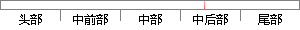

，因为在大多数的编程语言里，都用“%”符号表示取模或者求余运算。
片段位置图

相似结果
相似片段：
3 阅读权限 10 注册时间 2012-3-22 串个门 加好友 打招呼 发消息 发表于 2012-3-22 15:36:16 |显示全部楼层 通常情况下取模运算(mod)和求余(rem)运算被混为一谈，因为在大多数的编程语言里，都用'%'符号表示取模或者求余运算。在这里要提醒大家要十分注意当前环境下'%'运算符的具体意义，因为在有负数存在的情况下，两者的结果是不一样的。 对于整型数a，b来说，取模
| 对比库： | WriteCheck云资源库 |
| 来源： | www.vc258.com 查看来源 |
| 发布时间： | 2012-04-14 |
| 相似率 | 100% （严重抄袭） |